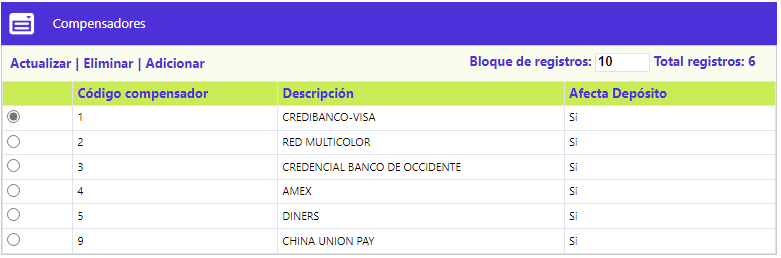
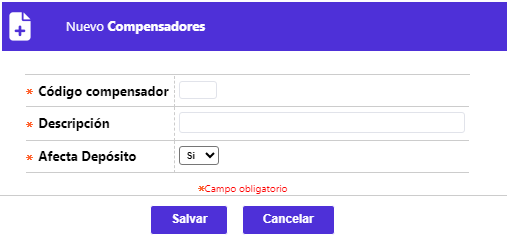
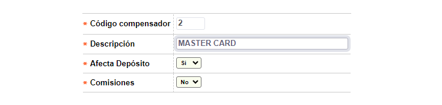

Compensadores |
Mediante esta función se permite darle mantenimiento a la tabla que contiene la codificación de los distintos entes encargados de la compensación (canalización) del movimiento del universo transaccional ínter entidades. Un mismo compensador puede procesar el movimiento correspondiente a más de una franquicia; adicionalmente, para cada uno de ellos se define si el aplicativo debe o no generar el depósito y comisión a la cuenta del establecimiento.

El formulario contiene las opciones Actualizar, Eliminar y Adicionar.
Adicionar: Si el usuario invoca la opción Adicionar se despliega un formulario con los siguientes bloques:

Código compensador |
Campo numérico de dos dígitos, obligatorio, asignado a cada una de las entidades que desempeñan el rol de cámara de compensación. |
Descripción |
En este campo alfanumérico de 30 posiciones, obligatorio, en el cual se registra el nombre asociado al código de cada compensador. |
Depósito |
Campo que posee lista de valores adjunta de la que debe seleccionarse entre Si o No la aplicación debe generar los depósitos a las cuentas de los establecimientos. |
Comisión |
Campo que posee lista de valores adjunta que permite seleccionar Si la entidad contratará un outsourcing para que realice la liquidación comisiones de Adquirencia pactadas con los establecimientos o No si la entidad liquida directamente estas. Si la selección es Si los campos que muestran los datos de las comisiones de Adquirencia en el tab cuentas de deposito de Información de Establecimientos no se muestran, por el contrario si la selección es No los campos que muestran dicha información son desplegados. |
Actualizar: Si el usuario invoca la opción Actualizar se despliega un nuevo formulario en el cual los únicos campos modificables son: Descripción, Afecta depósitos y Comisiones.
